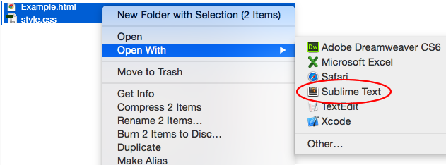
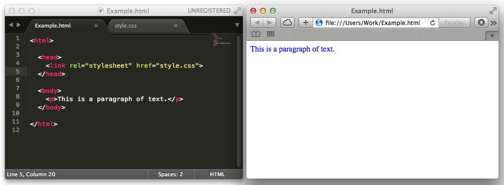

What is HTML?
HyperText Markup Language (HTML) is a language for describing and structuring web pages. HTML documents can include things like text, images, sound and video, using ‘tags’ to organise the content. Here’s a very simple HTML example, including a heading (<h1>), a paragraph of text (<p>) and an image (<img>):
<html>
<h1>Here is my cat:</h1>
<img src="cat.jpg">
<p>He's called 'fluffy' because he is fluffy.</p>
</html>What is CSS?
Cascading Style Sheets (CSS) is another language, used to format and style HTML documents. For example, you could make the paragraph of text above blue with this CSS code:
p {
color: blue;
}Using Trinket
When completing our HTML & CSS projects, we recommend using Trinket to build webpages online. Trinket offers several advantages over using a text editor offline:
- Children can see a live preview of their HTML & CSS code;
- Children can save their code online, allowing them to access their webpages both within their club and at home;
- Children can share their webpages with others, and can remix webpages shared with them.
The first HTML & CSS project (called Happy Birthday) explains the creating, saving and viewing of a simple webpage in more detail.
Working Offline
There may be times when children in your club will need to write HTML & CSS code offline. The following is a short guide to writing, editing and viewing HTML & CSS offline.
Writing
Each project’s downloadable resources includes the following files:
- Example.html
- style.css
Make sure that these files (as well as any images) are in the same folder. (If you want to write your own HTML, you can download the template webpage documents in the ‘Project Resources’ for each HTML project.)
Open both of these files in a text editor. We recommend Sublime Text 3, but there are loads of other good editors available. The easiest way to open both the .html and .css files for your webpage is to highlight both files and right-click to open them in a text editor.

Saving
After writing your HTML & CSS, save your files - making sure that the files have .html and .css file extensions.
Viewing
To view a webpage, double-click the Example.html file to open it in a browser.
If your HTML file opens in a text editor, make sure that it has a .html file extension.
The easiest way to view changes is to open your files in a browser and a text editor. You can then make changes in the text editor, save your changes and then click ‘refresh’ in the browser to see your updated webpage.
